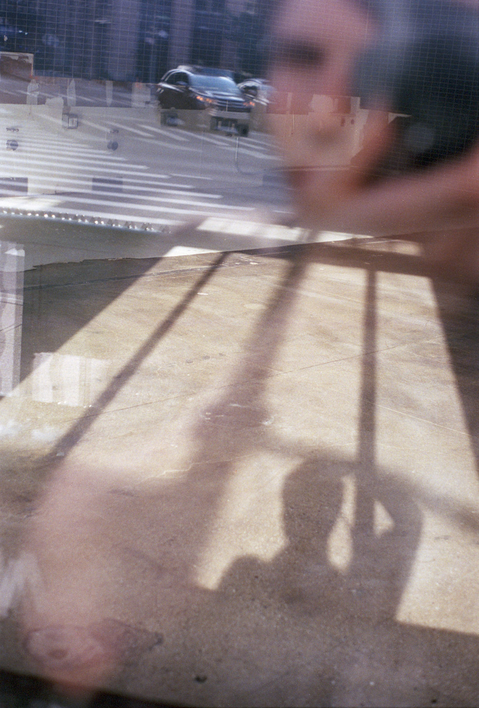

Kiefer Shortell (b.2004) is a documentary photographer currently based in Brooklyn. He documents day-to-day life both on the streets of New York and in his personal life with friends and family. He believes each photo is a look into the human condition and a sign of the acknowledgement we all deserve.
All Inquiries: studio@kiefershortell.com
